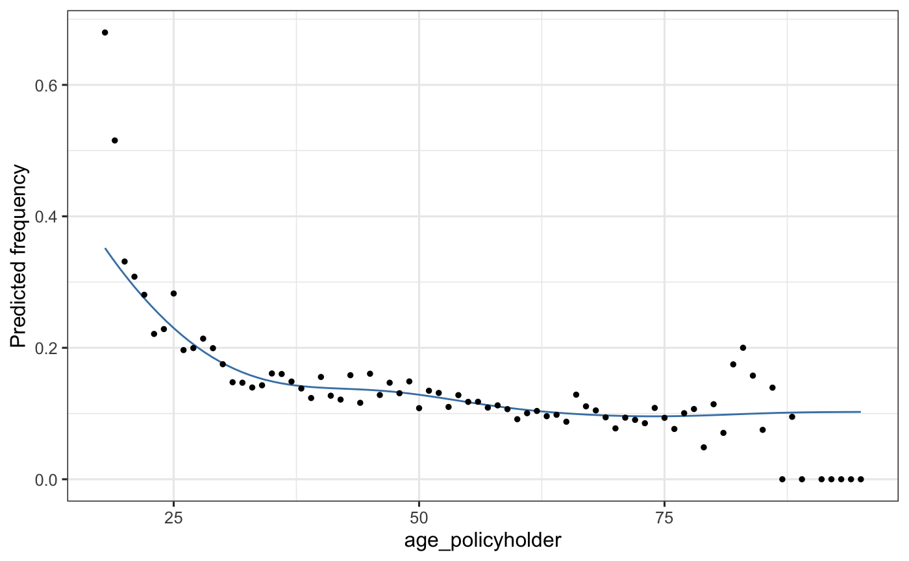
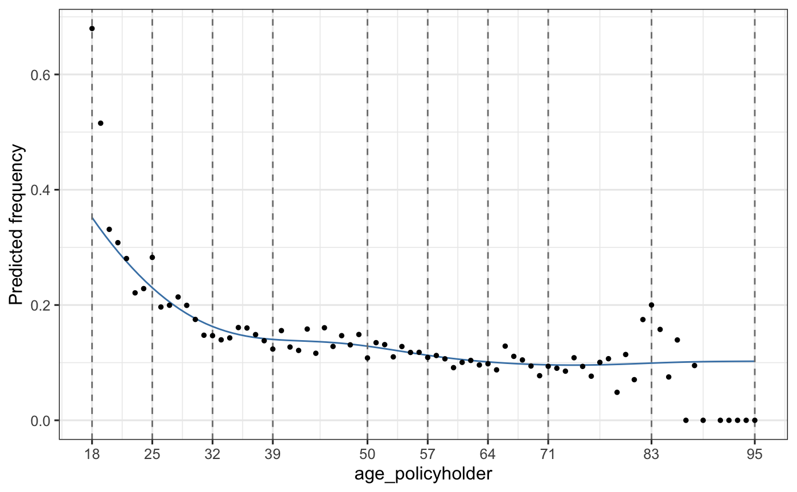
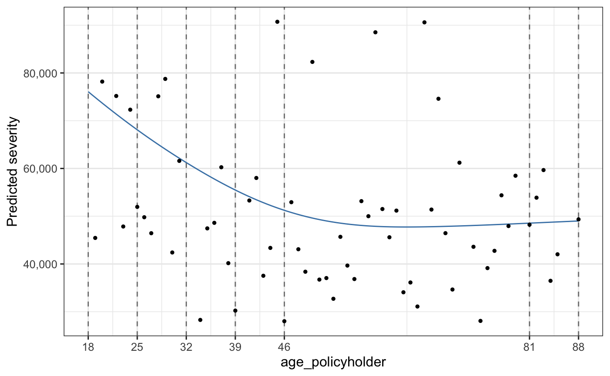
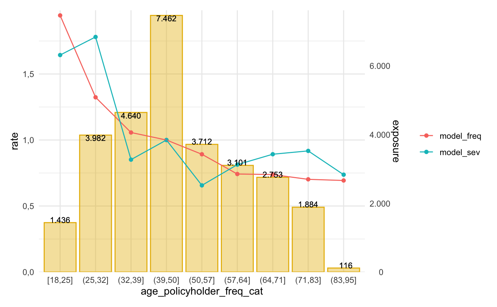

insurancerating
vignettes/vignette.Rmd
vignette.RmdThis document describes how to use insurancerating.
The goal of insurancerating is to give analytic techniques that can be used in insurance rating. It provides a data driven strategy for the construction of tariff classes in P&C insurance. The goal is to bin the continuous factors such that categorical risk factors result which capture the effect of the covariate on the response in an accurate way, while being easy to use in a generalized linear model (GLM). This method is based on the work by Henckaerts et al. (2018).
It also adds functionality showing additional lines for the reference categories in the levels of the coefficients in the output of a generalized linear regression analysis. In addition it implements a procedure determining the level of a factor with the largest exposure, and thereafter changing the base level of the factor to this level.
Install insurancerating from CRAN:
install.packages("insurancerating")
Or the development version from GitHub:
# install.packages("remotes") remotes::install_github("MHaringa/insurancerating")
This is a basic example which shows the techniques provided in insurancerating.
The first part shows how to fit a GAM (Generalized Additive Model) for the variable age_policyholder in the MTPL dataset. GAM is a powerful and yet simple technique. In general, GAM has the interpretability advantages of GLMs where the contribution of each independent variable to the prediction is clearly encoded. However, it has substantially more flexibility because the relationships between independent and dependent variable are not assumed to be linear.
library(insurancerating) # Claim frequency age_policyholder_frequency <- fit_gam(data = MTPL, nclaims = nclaims, x = age_policyholder, exposure = exposure) # Claim severity age_policyholder_severity <- fit_gam(data = MTPL, nclaims = nclaims, x = age_policyholder, exposure = exposure, amount = amount, model = "severity")
The function autoplot creates a ggplot2 figure. The points show the ratio between the observed number of claims and the exposure for each age.

The function construct_tariff_classes can be used to construct tariff classes. The tariff classes are constructed using an evolutionary algorithm for learning globally optimal classification trees. The evtree package implements an evolutionary algorithm for learning globally optimal classification and regression trees in R. See Grubinger et al. (2019) for more details on the various parameters that control aspects of the evtree fit.
Construct tariff classes for the claim frequency and claim severity:
clusters_freq <- construct_tariff_classes(age_policyholder_frequency) clusters_sev <- construct_tariff_classes(age_policyholder_severity)
Show plot:
autoplot(clusters_freq, show_observations = TRUE)

The figure shows that younger policyholders have a higher risk profile. The fitted GAM is lower than might be expected from the observed claim frequency for policyholders of age 19. This is because there are very few young policyholders of age 19 present in the data set.
Show tariff classes for the claim severity:
library(dplyr) age_policyholder_severity %>% construct_tariff_classes() %>% autoplot(., show_observations = TRUE, remove_outliers = 100000)

This example shows other techniques provided in insurancerating.
The obtained tariff classes from the previous example are added to the dataset, and the base level of the factor age_policyholder is set to the level with the largest exposure. In this example for claim frequency the class for ages (39,50], which contains the largest exposure.
dat <- MTPL %>% mutate(age_policyholder_freq_cat = clusters_freq$tariff_classes) %>% mutate(age_policyholder_sev_cat = clusters_sev$tariff_classes) %>% mutate_if(is.character, as.factor) %>% mutate_if(is.factor, list(~biggest_reference(., exposure))) glimpse(dat) #> Rows: 32,731 #> Columns: 6 #> $ age_policyholder <int> 43, 21, 54, 44, 20, 38, 68, 45, 76, 30, 28,… #> $ nclaims <int> 0, 0, 0, 1, 1, 0, 0, 1, 0, 0, 0, 0, 0, 0, 0… #> $ exposure <dbl> 1.0000000, 1.0000000, 1.0000000, 1.0000000,… #> $ amount <dbl> 0, 0, 0, 57540, 2057, 0, 0, 6510, 0, 0, 0, … #> $ age_policyholder_freq_cat <fct> "(39,50]", "[18,25]", "(50,57]", "(39,50]",… #> $ age_policyholder_sev_cat <fct> "(39,46]", "[18,25]", "(46,81]", "(39,46]",…
The function rating_factors prints the output including the reference group for a GLM (Generalized Linear Model).
model_freq <- glm(nclaims ~ age_policyholder_freq_cat, offset = log(exposure), family = "poisson", data = dat) model_sev <- glm(amount ~ age_policyholder_freq_cat, weights = nclaims, family = Gamma(link = "log"), data = dat[dat$amount > 0, ]) rating_factors(model_freq, model_sev, model_data = dat, exposure = exposure) %>% autoplot()

Grubinger, Thomas, Achim Zeileis, Karl-Peter Pfeiffer, and Maintainer Thomas Grubinger. 2019. “Package ‘Evtree’.”
Henckaerts, Roel, Katrien Antonio, Maxime Clijsters, and Roel Verbelen. 2018. “A Data Driven Binning Strategy for the Construction of Insurance Tariff Classes.” Scandinavian Actuarial Journal 2018 (8). Taylor & Francis: 681–705.